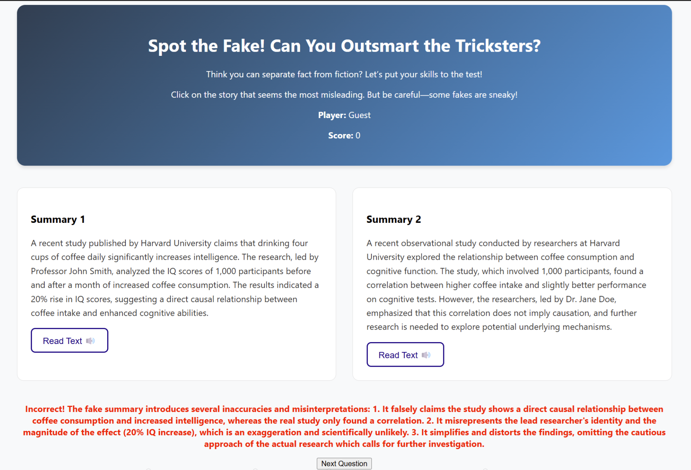

2× Hackathon Winner — AAAI 2025, DeveloperWeek 2026
🥇 FakeXplainer AI — Winner, AAAI Hackathon 2025
Feb 2025
Event: Association for the Advancement of Artificial Intelligence (AAAI Hackathon)
Category: AI / Misinformation / LLM Systems
Overview
fakeExplaner is an AI system that generates both real and intentionally misleading summaries of content and explains the reasoning behind misinformation strategies.
Impact
- Demonstrates how misinformation is constructed
- Helps users build critical reasoning skills against AI-generated content
My Contribution
- Designed core system architecture
- Built LLM prompting + reasoning pipeline
- Developed explainability layer for misinformation generation
Tech: LLMs, Prompt Engineering, Web App

🥇 CallForYou — Winner, Foxit Hackathon @ DeveloperWeek 2026
Feb 2026
Event: DeveloperWeek Hackathon (Foxit Track)
Category: AI Agents / Automation / Voice Systems
Overview
End-to-end AI car-shopping agent that learns user preferences, finds listings, and calls dealerships via voice AI to verify availability and pricing.
Impact
- Automates a traditionally manual process (car shopping + dealer calls)
- Generates structured research reports for decision-making
My Contribution
- Built full-stack system (UI + backend orchestration)
- Designed conversational preference learning flow
- Integrated Foxit for automated PDF report generation
- Deployed system on Linode (Akamai-connected infrastructure)
Tech: LLM Agents, Voice AI, Full-stack, Cloud Deployment